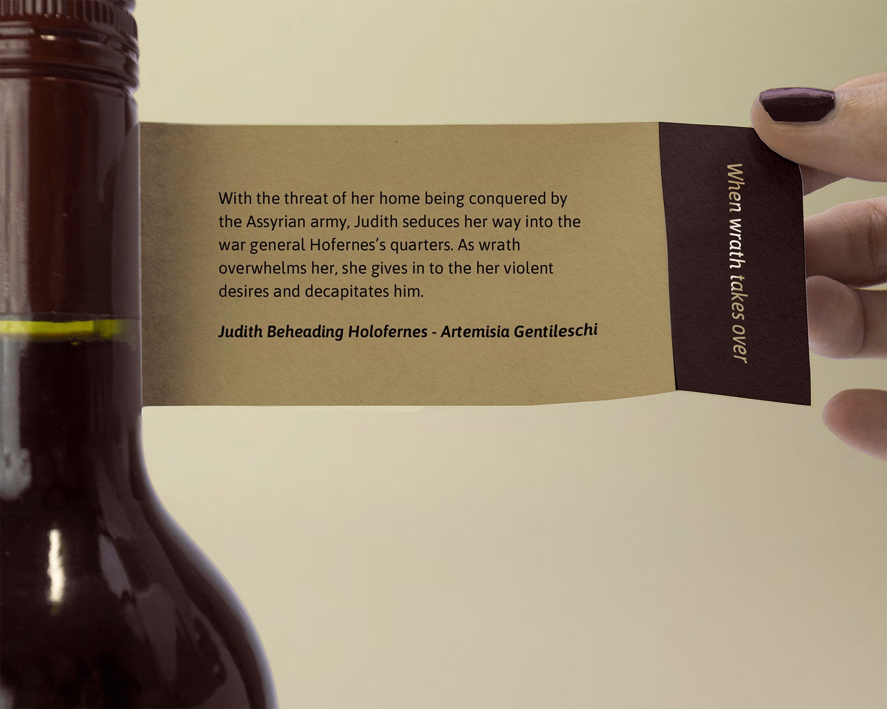
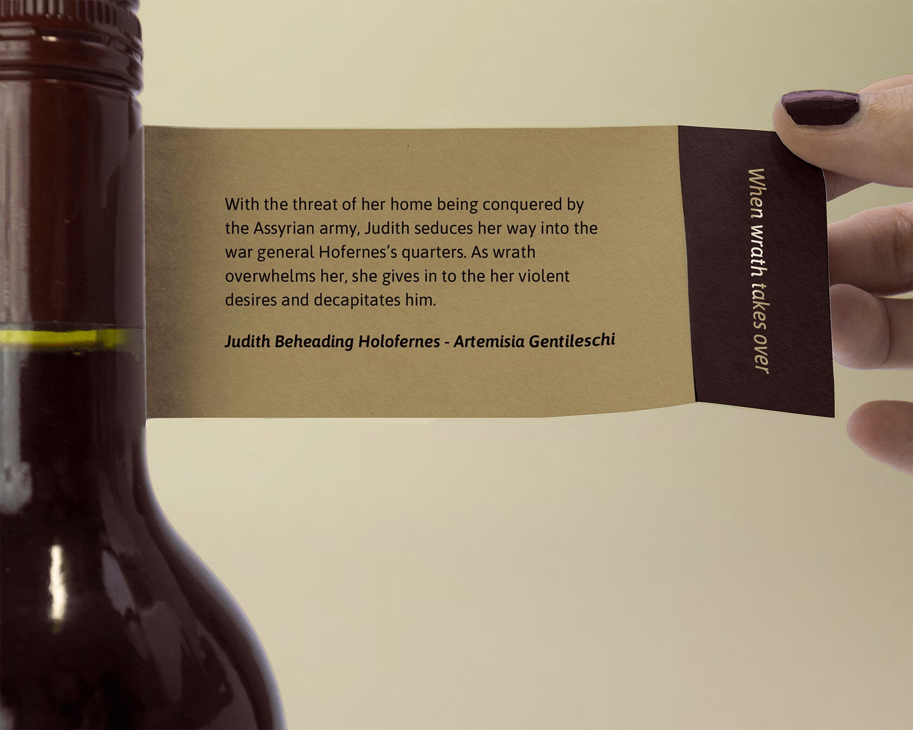

The feeling
Take our Syrah Rosé, Envy; can you remember a time when you were seething with jealousy? The Sinful Squash took that bitter sting in your mouth and bottled it, because even the most depraved emotions deserve to be embraced without regret. Each sin is represented by a baroque painting luxuriously layered over spot UV gloss inspired by the designs of Roman Catholic windows.


Project Description Block
Use this two-column layout to separate project context from detailed case study text.
To create new project pages: copy this file, rename it, and update the navigation arrows. The responsive layout works automatically.
Pro tip: Find more ready-to-use components in components.html to build faster.
 

Neck Label
Once bought, the paper on the neck can be unfurled to unveiled the true degradation of the painting’s story, and how it ties into the wine’s featured sin.